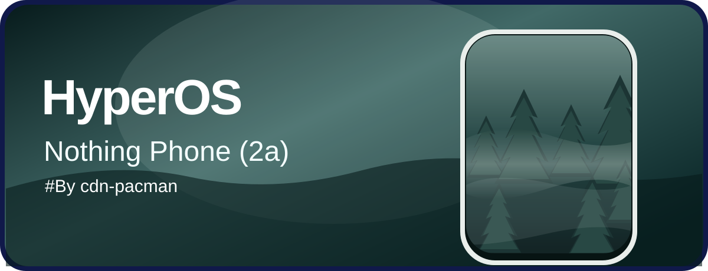

Nothing Phone (2a)
Custom ROMs, screenshots, build details, and download links.

MediaTek Dimensity 7200 Pro · Codename PACMAN
Custom ROMs, screenshots, build details, and download links.
Quick information about devices, chipset, releases, and support.
Device: Nothing Phone (2a) · Codename PACMAN
Chipset: MediaTek Dimensity 7200 Pro
ROM releases: Find build announcements and downloads in the official Telegram group below.